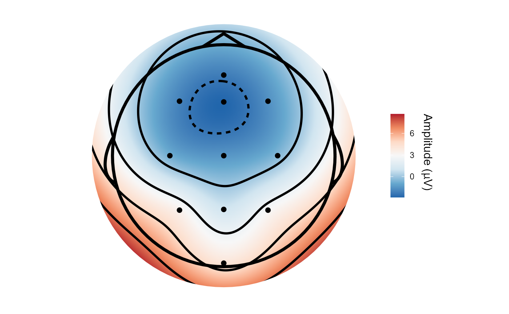

Allows topographical plotting of functional data. Output is a ggplot2 object.
topoplot(data, ...) # S3 method for default topoplot(data, ...) # S3 method for data.frame topoplot( data, time_lim = NULL, limits = NULL, chanLocs = NULL, method = "Biharmonic", r = NULL, grid_res = 200, palette = "RdBu", interp_limit = "skirt", contour = TRUE, chan_marker = "point", quantity = "amplitude", montage = NULL, highlights = NULL, scaling = 1, groups = NULL, verbose = TRUE, k = 40, ... ) # S3 method for eeg_data topoplot( data, time_lim = NULL, limits = NULL, chanLocs = NULL, method = "Biharmonic", r = NULL, grid_res = 200, palette = "RdBu", interp_limit = "skirt", contour = TRUE, chan_marker = "point", quantity = "amplitude", montage = NULL, highlights = NULL, scaling = 1, verbose = TRUE, groups = NULL, k = 40, ... ) # S3 method for eeg_epochs topoplot( data, time_lim = NULL, limits = NULL, chanLocs = NULL, method = "Biharmonic", r = NULL, grid_res = 200, palette = "RdBu", interp_limit = "skirt", contour = TRUE, chan_marker = "point", quantity = "amplitude", montage = NULL, highlights = NULL, scaling = 1, groups = NULL, verbose = TRUE, k = 40, ... ) # S3 method for eeg_ICA topoplot( data, component, time_lim = NULL, limits = NULL, chanLocs = NULL, method = "Biharmonic", r = NULL, grid_res = 200, palette = "RdBu", interp_limit = "skirt", contour = TRUE, chan_marker = "point", quantity = "amplitude", montage = NULL, highlights = NULL, scaling = 1, verbose = TRUE, groups = NULL, k = 40, ... ) # S3 method for eeg_tfr topoplot( data, time_lim = NULL, limits = NULL, chanLocs = NULL, method = "Biharmonic", r = NULL, grid_res = 200, palette = "RdBu", interp_limit = "skirt", contour = TRUE, chan_marker = "point", quantity = "power", montage = NULL, highlights = NULL, scaling = 1, freq_range = NULL, verbose = TRUE, groups = NULL, k = 40, ... )
| data | An EEG dataset. If the input is a data.frame, then it must have columns x, y, and amplitude at present. x and y are (Cartesian) electrode co-ordinates), amplitude is amplitude. |
|---|---|
| ... | Various arguments passed to specific functions |
| time_lim | Timepoint(s) to plot. Can be one time or a range to average over. If none is supplied, the function will average across all timepoints in the supplied data. |
| limits | Limits of the fill scale - should be given as a character vector with two values specifying the start and endpoints e.g. limits = c(-2,-2). Will ignore anything else. Defaults to the range of the data. |
| chanLocs | Allows passing of channel locations (see
|
| method | Interpolation method. "Biharmonic" or "gam". "Biharmonic" implements the same method used in Matlab's EEGLAB. "gam" fits a Generalized Additive Model with k = 40 knots. Defaults to biharmonic spline interpolation. |
| r | Radius of cartoon head_shape in mm. Default value is 95 (mm) when
using |
| grid_res | Resolution of the interpolated grid. Higher = smoother but slower. Defaults to 200 points per edge. |
| palette | Defaults to RdBu if none supplied. Can be any palette from RColorBrewer or viridis. If an unsupported palette is specified, switches to Greens. |
| interp_limit | "skirt" or "head". Defaults to "skirt". "skirt" interpolates just past the farthest electrode and does not respect the boundary of the head_shape. "head" interpolates up to the radius of the plotted head, and moves all electrodes inside the head. |
| contour | Plot contour lines on topography (defaults to TRUE) |
| chan_marker | Set marker for electrode locations. "point" = point, "name" = electrode name, "none" = no marker. Defaults to "point". |
| quantity | Allows plotting of an arbitrary quantitative column. Defaults to amplitude. Use quoted column names. E.g. "p.value", "t_statistic". |
| montage | Name of an existing montage set. Defaults to NULL; (currently only 'biosemi64alpha' available other than default 10/20 system) |
| highlights | Electrodes to highlight (in white). |
| scaling | Scaling multiplication factor for labels and any plot lines. Defaults to 1. |
| groups | Column name for groups to retain. This is required to create facetted plots. |
| verbose | Warning messages when electrodes do not have locations. Defaults to TRUE. |
| k | Degrees of freedom used for spline when using |
| component | Component to plot (numeric) |
| freq_range | Range of frequencies to average over. |
default: Default method for data frames.
data.frame: Topographical plotting of data.frames and other non
eeg_data objects.
eeg_data: Topographical plotting of eeg_data objects.
eeg_epochs: Topographical plotting of eeg_epochs objects.
eeg_ICA: Topographical plot for eeg_ICA objects
eeg_tfr: Topographical plotting of eeg_tfr objects.
The
function fits a GAM using the gam function from mgcv. Specifically, it
fits a spline using the model function gam(z ~ s(x, y, bs = "ts", k = 40).
Using GAMs for smooths is very much experimental. The surface is produced
from the predictions of the GAM model fitted to the supplied data. Values
at each electrode do not necessarily match actual values in the data:
high-frequency variation will tend to be smoothed out. Thus, the method
should be used with caution. In addition the method can only be used when
there are more than 40 electrodes.
Other scalp-based maps:
erp_scalp(),
interactive_scalp()
Matt Craddock, matt@mattcraddock.com
topoplot(demo_epochs)#>#>